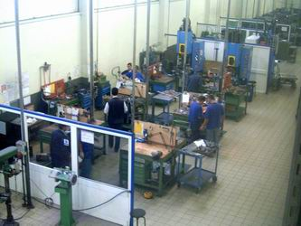
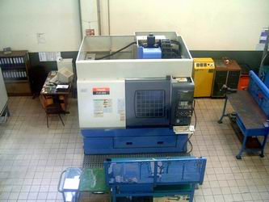
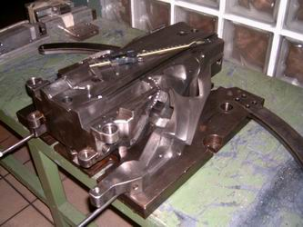
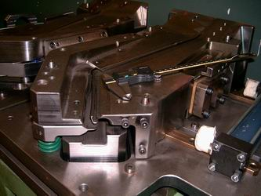
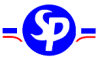
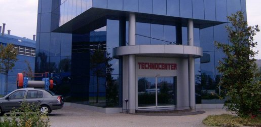

Kalýphane,
CNC tezgahlar:
|
 |
 |
|
Firma
tüm kalýplarýný kendi kalýphanesinde üretmektedir (solda).
MAZAK FJV 200, 3.5 Eksen yüsek hýzda Ýþleme (HSM) tezgahýnda
soðutma için su yerine basýnçlý hava kullanýmýna geçilmiþtir.
Bu sayede takým ömrü uzatýlmýþtýr (saðda) |
|
 |
 |
|
CAD/CAM
ve 3D optik tarama teknolojilerini iyi bir þekilde kullanan
Standard Profil A.Þ. gayet karmaþýk geometriye sahip
kalýplarý kendi bünyesinde, kýsa sürede ve hassas bir
þekilde üretebilmektedir. |
Standard
Profil hakkýnda:
Yurt içindeki ve dýþýndaki otomotiv üreticilerine sýzdýrmazlýk
profilleri üreten bir yan sanayi kuruluþu olan Standard
Profil A.Þ. 1977 yýlýnda Düzce Konuralp Hamamaltý mevkiinde
18.000 m2 'lik bir alana kurulmuþtur. Bugün, yaklaþýk 176.000
m2 bir alan üzerinde 50.653 m2 kapalý alana sahiptir ve geliþimini
hýzla sürdürmektedir.
Standard
Profil, ileri teknolojisi sayesinde tekli ya da çoklu sertlikte
- kauçuktan ya da PVC - TPV - TPE'den mamül sýzdýrmazlýk fitillerini,
sac, aluminyum, paslanmaz çelik, tel takviye ve floklu olarak
üretmektedir.

Geliþtirici
ve tedarikçi firma olarak bir çok projeye imza atmýþ olan
Standard Profil, Türkiye'deki otomotiv sanayii firmalarýnýn
tüm ihtiyaçlarýna cevap vermekte ve yurt dýþýnda ise General
Motors, Ford, Volkswagen, Audi ve Fiat gibi OEM firmalarýnýn
Almanya, Belçika, Ýspanya, Portekiz, Ýngiltere, Ýtalya, Polonya,
Avustralya, Brezilya, Meksika gibi tüm dünya coðrafyasýna
daðýlmýþ fabrikalarýna sýzdýrmazlýk fitili ihraç etmektedir.
Standard
Profil A.Þ., 2004 yýlýndaki kalite, fiyat, teknoloji ve servisteki
performansýndan dolayý GM tarafýndan Dünya çapýnda 78 yan
sanayi firmasýna verilen "Yýlýn Tedarikçisi" ödülüne
6. kez layýk görülmüþtür.
Daha
fazla bilgi için:
|